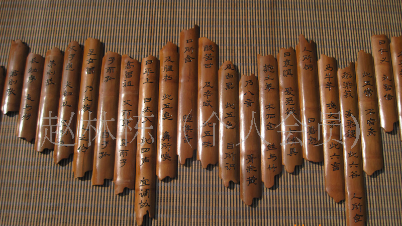
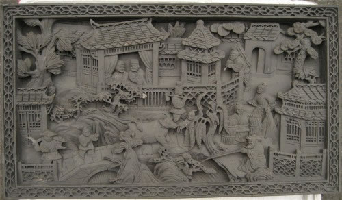
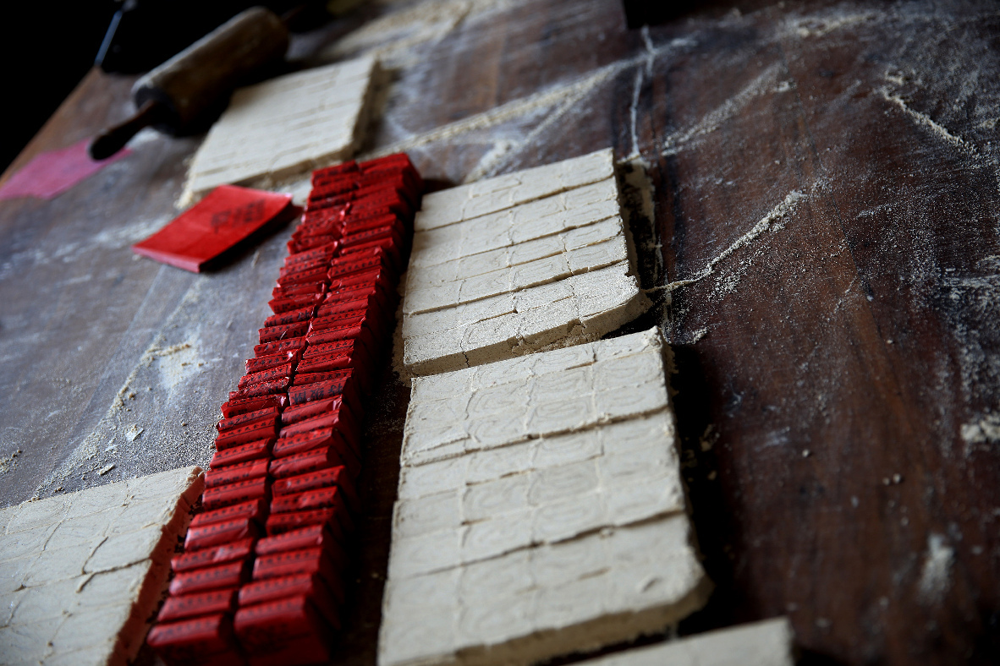

徽州工艺



木雕，
,清末民初，绩溪县胡国宾、汪聚有名噪一时。歙县李祥顺善雕，作品有歙县深渡下铺姚氏祠堂、大茂村朱氏祠堂、定潭张翰飞宅等。民国期间，歙县吴炳烈、汪叙伦、王金九俱擅木雕，20世纪30～40年代，结为木雕团体在歙行艺。吴氏等人以徽剧为内容，丰富了木雕题材，他们曾参加北京人民大会堂安徽厅木雕制作，流传于世的主要作品有《喜庆丰收》、《郑成功解放台湾》、《和平颂》、《牛》、《耕织图》、《黄山风景》、《雷锋》、《红灯记》等。民国初年，黟县宏村怡和堂（承志堂）梁架和门窗、楣罩分别聘请歙县方子贵师徒5人和黟县程双喜师徒3人雕刻，十分精细。石雕，
相传黄鼎、朱云亮、余香等善石雕，余氏为清乾隆年间黟县人。歙县北岸吴氏宗祠“叙伦堂”于清道光六年（1862）重修，祠内西湖景石雕拱板为黟县余忠臣所刻。歙县王仙伯曾赴京参加人民大会堂安徽厅石雕制作。1979年以后，歙县吴观光在徽州古建公司耄期授徒，吴氏石雕构图严谨，刀法细腻。屯溪区冯有进、程佑福等人俱擅石雕，建石坊多座，并擅石狮。据史记记载，古徽州历史悠久，从东汉建安十三年(公元208年)，古徽州建郡之始迄今近两千年。它地处皖、浙、赣三省交界，黄山脚下，山水秀丽，人杰地灵。历以商贾众多、文风兴盛而蜚声海内外，徽商的发展繁荣了文化教育事业，造就了新安理学、新安医学、徽派朴学、新安画派、徽派版画、徽州篆刻、徽派建筑、徽雕等徽州文化，成为我国三大学派之一。砖雕，
以平面淡浮雕手法为主，一般只有平雕和浅浮雕，借助于线条造型，而缺乏透视变化，但强调对称，富于装饰趣味。明中叶以后，随着徽商财力的增强，炫耀乡里的意识日益浓厚，木雕艺术也逐流向精雕细刻过渡，多层透雕取代平面浅雕成为主流。 清代雕刻细腻繁复，构图、布局吸收了新安画派的表现手法，讲究艺术美，多用深浮雕和圆雕，提倡镂空效果，有的镂空层次多达十余层，亭台楼榭，树本山水，人物走兽，花鸟虫鱼集于同一画面，玲现剔透，错落有致，层次分明，栩栩如生，显示了雕刻工匠高超的艺术才能。